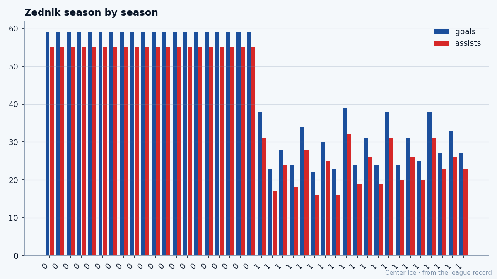

MTL
MTL249th, At 29: Richard Zednik's last winter in Montreal
The ninth-round pick from Bystrica is scoring 26.9 percent of Montreal's goals, on a team with 11 wins, in the final year of a $1.80M deal
 Tomáš VránaProfile writer · The Sweater
Tomáš VránaProfile writer · The SweaterThe piece
 Richard Zednik82 scored his first NHL goal on October 5, 1996, against Ed Belfour of the Chicago Blackhawks. He was 20 years old, a 249th-overall pick in the building's imagination, and he scored once in nine games before Washington sent him back to Portland. Eight years later he is 29, wearing number 20 in Montreal, and he has scored 39 goals in 42 games for a club that has won 11.
Richard Zednik82 scored his first NHL goal on October 5, 1996, against Ed Belfour of the Chicago Blackhawks. He was 20 years old, a 249th-overall pick in the building's imagination, and he scored once in nine games before Washington sent him back to Portland. Eight years later he is 29, wearing number 20 in Montreal, and he has scored 39 goals in 42 games for a club that has won 11.
His contract expires in July. The money is $1.80M. The Book has him at 79 today, which is 1 below his base of 87 on the Bureau's Development Index. Morale: 89. He has said nothing about July in any room that has reached the public.
What he has done instead is score. Last season he put up 59 goals and 55 assists in 82 games, 114 points, 170 penalty minutes, 21.9 minutes a night. No trophy came with it.  Ryan Smyth86 won the Hart with 163. Zednik was a long way back on the leaderboard on a team that won 11 games. He was 28. Nobody in Montreal said anything about what it meant that a 249th overall pick had become that.
Ryan Smyth86 won the Hart with 163. Zednik was a long way back on the leaderboard on a team that won 11 games. He was 28. Nobody in Montreal said anything about what it meant that a 249th overall pick had become that.
This winter the numbers are better. 39 goals, 72 points in 42 games, a 142-point pace. The Index says he is 1 below his base, which is a rounding error. His Book grades are all speed and body: 84 speed, 83 acceleration, 83 agility, 83 endurance, 83 penalty-killing, 82 puck control. His faceoff grade is 50. His fight grade is 50. His injury grade is 50. He is a man who skates, avoids, and finishes.

Montreal has scored 145 goals this season. Zednik's 39 account for 26.9 percent of them. The next-best scorer on the roster is Mike Komisarek82, a defenseman, and Komisarek has 49 points.  Saku Koivu84 carries an 81 in the Book and does not appear in the top 30 in scoring. Zednik is nowhere near the next man on the roster, and the next man is a defenseman.
Saku Koivu84 carries an 81 in the Book and does not appear in the top 30 in scoring. Zednik is nowhere near the next man on the roster, and the next man is a defenseman.
The team is 11-23-4, 32 points, last in the Northeast, last in the entire Eastern Conference. They have been outscored 176 to 142. They are on a two-game losing streak. The room he plays in has lost 23 of 42. The man has scored more than a quarter of what his team has managed.
The road from Bystrica to the ninth round
Zedník was born in Bystrica, Slovakia, in January 1976. He came to North America and played junior for the Portland Winter Hawks of the Western Hockey League. He scored 35 goals in his rookie year there, 1994-95. Washington drafted him in 1994, ninth round, 249th overall. Thirty picks a round, eight full rounds before the ninth, and he was at the bottom of that one. Nine clubs passed on him after the eighth round closed. Washington took him with no one else in the building watching.
He made the Capitals' roster out of training camp in 1996. He scored against Belfour in the opener. One goal in nine games. Down to Portland, the AHL, the Pirates' Calder Cup run. Recalled in March 1997. His first full NHL season was 1997-98: 65 games, 17 goals. Six seasons in Washington. A radio station in the District once offered free tickets and his jersey to anyone who dyed their hair blond like his. That was October 2000.
On March 13, 2001, Washington traded him to Montreal along with Jan Bulis and a first-round pick. The deal brought Trevor Linden and Dainius Zubrus to the Capital side. He has been in Montreal since.
The face that split
On April 26, 2002, in a playoff game at the Molson Centre against Boston, Bruins defenseman Kyle McLaren drove an elbow into Zedník's face. The injury drew comparisons to the 1989 cut on Clint Malarchuk's throat, though the specifics were different. Zedník survived it. What survived with him was the question of what a face costs in a game that sends 198 pounds of forward momentum at a man who does not fight back, who will not go to the front of the net late in the third to make a defenseman look at him.
He does not do those things now. His fight grade is 50. His faceoff grade is 50. His endurance is 83. He skates for 21.2 minutes a night, and he does not get hit on purpose, and he puts the puck in the net because the people around him cannot create enough to make the other team's defense honest.
What July asks
The contract is $1.80M. Zero years left. He is 29. The Index has him 1 below base, which means the Bureau sees him at roughly his own level, holding steady. A 142-point pace is an All-Star number. A 249th pick who produces All-Star numbers in a contract year is a trade candidate by March, or an expensive problem by July. Montreal's payroll does not grow by accident, and his 26.9 percent goal share means the next GM who inherits this roster has a decision about whether to rebuild around a man the organization drafted ninth-round-low and found nothing else to build with.
Zedník has not talked about it. His teammates have not talked about it. The locker room in Montreal has lost 23 games and the only voice carrying a positive number belongs to the man who was the 249th pick in the 1994 draft, from Bystrica, 72 inches tall, 198 pounds, left shot, wearing number 20, scoring 39 goals for a team that cannot win them.
The next man who asks him about July will get the same answer the last one got. The puck is coming to his stick in the right circle and he is putting it top shelf, and that is what he does.